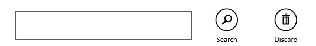

An App Bar provides menu-like functionality in Windows 8 modern apps. It is normally displayed when the user right-clicks, presses WinKey + Z, or swipes up/down from the bottom/top of the screen.
The following XAML code snippet (which is inserted at the page-level) shows how to construct an App Bar that provides a simple search feature.
<Page.TopAppBar> <AppBar Name="myAppBar"> <Grid> <Grid.ColumnDefinitions> <ColumnDefinition Width=".4*" /> <ColumnDefinition Width=".6*" /> </Grid.ColumnDefinitions> <TextBlock Name="tbSearchResultsCount" Grid.Column="0" Margin="10" Width="400" Height="60" FontSize="24" HorizontalAlignment="Left" VerticalAlignment="Center" /> <StackPanel Grid.Column="1" Orientation="Horizontal" HorizontalAlignment="Right"> <TextBox Name="tbSearch" Margin="10" Width="300" Height="50" FontSize="24" VerticalContentAlignment="Center" /> <Button Name="btnSearch" HorizontalAlignment="Right" Style="{StaticResource SearchAppBarButtonStyle}" Tapped="btnSearchtapped" /> <Button Name="btnClearSearch" HorizontalAlignment="Right" Style="{StaticResource DiscardAppBarButtonStyle}" Tapped="btnClearSearchtapped" /> </StackPanel> </Grid> </AppBar> </Page.TopAppBar>